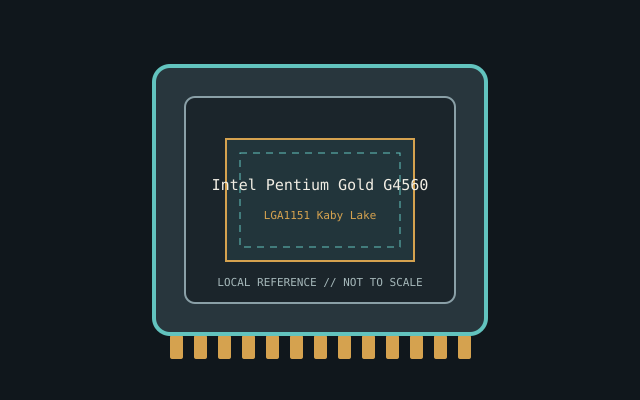

[ INDIVIDUAL CPU COMPONENT ]
Intel Pentium Gold G4560
Kaby Lake-S, 2017; 2C/4T, 3.50 GHz, 3 MB, 54 W, HD 610 Model-specific record; confirm the complete part marking before installation.

IDENTIFICATION: Intel Pentium Gold G4560. Product name alone does not establish package, stepping, voltage or firmware compatibility.
Verified model specifications
| Catalog path | Intel → Pentium generations |
|---|---|
| Model and compute | Kaby Lake-S, 2017; 2C/4T, 3.50 GHz, 3 MB, 54 W, HD 610 |
| Package / socket | LGA1151 Kaby Lake |
| Compatibility | Validated 100/200-series BIOS; not supported 300-series CPU |
| Stepping and variants | No Turbo; distinguish G4560 from G4600/G4620 |
Compatibility and service
- Validated 100/200-series BIOS; not supported 300-series CPU
- No Turbo; distinguish G4560 from G4600/G4620
- Record BIOS/iGPU test; inspect socket
- Confirm board manual, exact CPU support list, firmware, voltage/power, memory and cooling before use; never force a package.
Service & archival notes
Record BIOS/iGPU test; inspect socket
Photograph package, markings, contacts and date/lot codes before repair. Log host board, BIOS/microcode, memory, cooler, condition, provenance and source revision.
Sources & further reading
- Intel ARK — Intel Pentium Gold G4560Manufacturer specifications; search exact model and package S-spec.
- Intel processor architecture manualsManufacturer reference for architecture and instruction behavior.
Manufacturer documents take precedence. Family-level references may not resolve every stepping; verify the marking and motherboard CPU list.